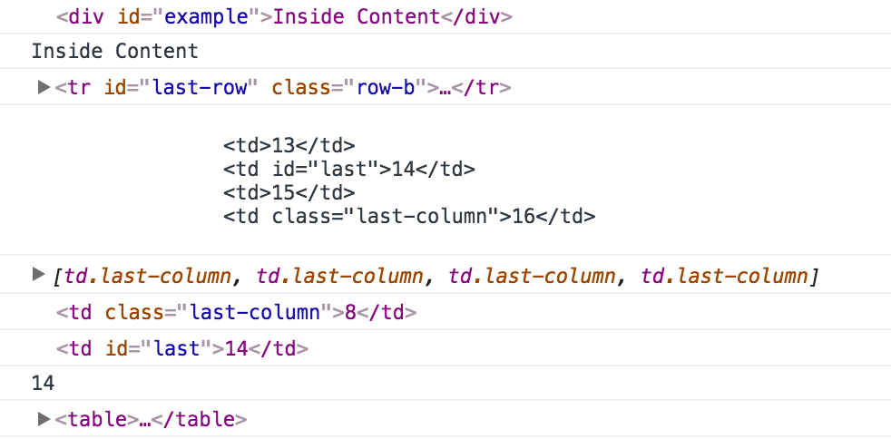

| 1 | 2 | 3 | 4 |
| 5 | 6 | 7 | 8 |
| 9 | 10 | 11 | 12 |
| 13 | 14 | 15 | 16 |
| 1 | 2 | 3 | 4 |
| 5 | 6 | 7 | 8 |
| 9 | 10 | 11 | 12 |
| 13 | 14 | 15 | 16 |
Please select the following and output it's results using console.log(). Once you select the element console.log() the element object. When asked for the value also console.log() the value of the element using the innerHTML property. An example of both is provided in the console.
APIs you will use in this Assignment:
Not using querySelector or querySelectorAll:
Using the querySelector or querySelectorAll:
Output:
